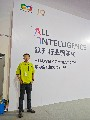
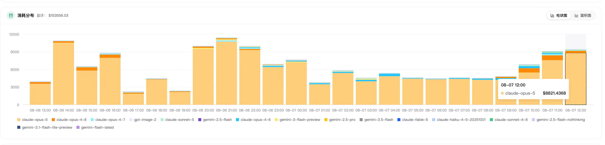
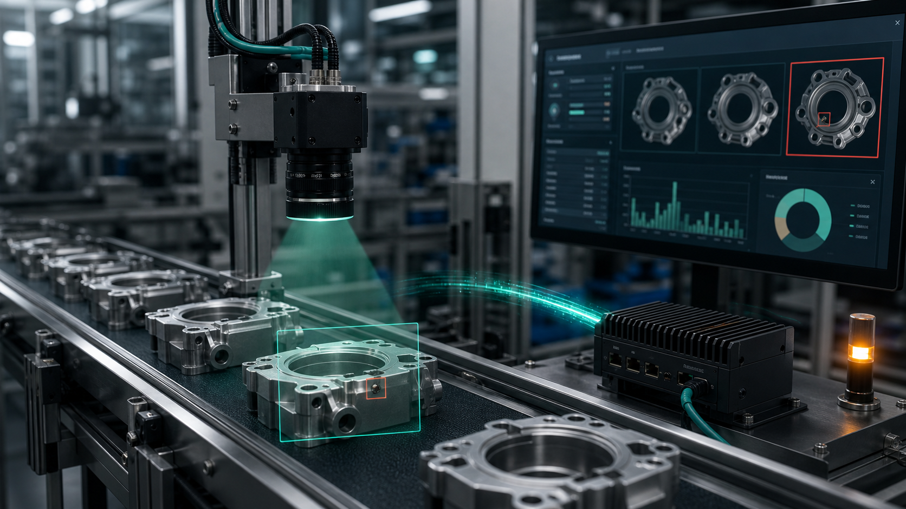
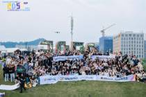
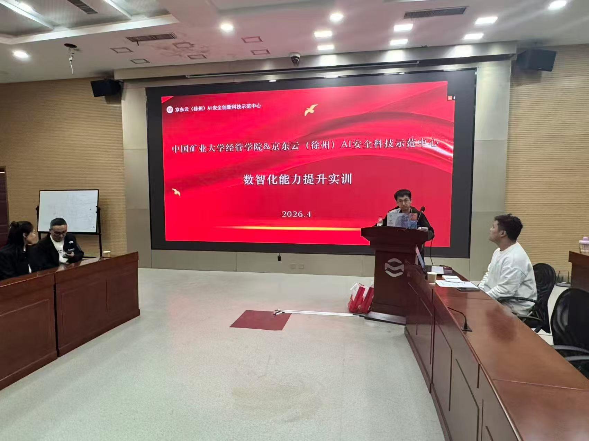
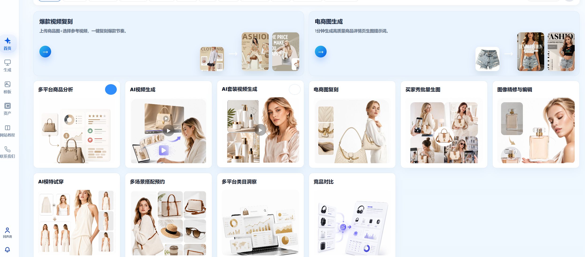

01
企业知识工程 · 全栈交付
企业 AI 知识库与 RAG 系统
围绕设备文档、工艺资料和异常记录构建智能检索与问答系统，覆盖需求分析、系统设计、开发、部署与运维。
50%+客服与内部支持效率提升
03 · Delivery + Ecosystem
从企业 AI 产品、研发效能和工业现场，到内容生产、人才培养与生态协同：以下九个案例展示我如何连接问题、资源、团队与结果。
Product & Engineering
覆盖业务定义、架构设计、研发组织、部署运维和效果验证，不公开客户敏感数据及内部材料。
围绕设备文档、工艺资料和异常记录构建智能检索与问答系统，覆盖需求分析、系统设计、开发、部署与运维。

02本地项目照片主导 DevOps 与 CI/CD 流程优化，带领数十人研发团队推进需求拆解、技术评审、质量控制与跨团队协同。

03平台界面统筹接入国内外主流模型和头部厂商资源，建设模型选型、统一接入、成本可视化、服务治理与 Agent 工作流底座。

04基于 YOLO、OpenCV 与 TensorRT 构建工业视觉方案，在 Jetson、瑞芯微等平台完成算法优化、边缘部署与现场联调。
Community, Talent & Content
不仅交付系统，也持续建设人才密度、行业连接和可规模化的内容生产能力。

05社群活动WaytoAGI 是由开发者、学者与 AI 实践者共同参与的学习社区和开放知识库，强调共学、共建与实践连接。作为徐州负责人，推进本地活动、内容交流、资源协同和项目对接。

06实训现场 · 2026.04面向高校学生开展数智化能力提升实训，把真实产业问题、AI 工具链和工程交付方法带入课堂，连接课程学习与项目实践。

07产品界面面向电商内容生产，整合商品图生成、视频复刻、AI 模特试穿、套装视频和营销素材变体能力，形成从商品分析到素材批量生产的一体化工作台。
Channel & Ecosystem
把厂商能力、高校人才、技术社群和真实业务场景组织成可持续协作网络。
与华为、字节跳动、阿里巴巴、京东、英伟达等国内外大厂合作，围绕云资源、模型能力、算力硬件、行业方案和市场机会进行协同，缩短从需求到方案落地的路径。
以生态社群为连接器，持续汇聚开发者、高校、厂商与企业需求，形成“发现需求—组织能力—联合验证—复制交付”的协作闭环。
Delivery Method
先明确业务成功标准，再组织技术、人才与渠道，通过小步验证把不确定性留在成本更低的阶段。